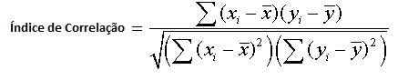
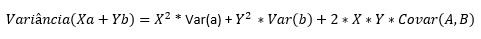

Utilizamos métodos consagrados no mercado financeiro para efeturar avaliaões de ativos e disponibilizamos funcionalidades gratuitas para que o investidor individual tenha melhores ferramentas para tomada de decisão.
O termo Fronteira Eficiente advém dos estudos de Harry Markowitz sobre a relação entre retorno, risco e correlação dos ativos. As bases da alocação de ativos.
Considerado o pai da Moderna Teoria dos Portifólios, Harry Markowitz observou que o risco individual de um investimento não é tão importante como o conjunto de todos os investimentos de um portifólio.
Cada investimento possui um determinado risco e retorno esperado.
Porém, se adicionarmos vários investimentos em um portifólio, o risco e retorno esperado, atuando em conjunto, podem se mostrar mais eficientes do que em um investimento isolado.
Primeiramente observa-se os retornos do ativo A e do ativo B. Calcula-se para cada um dos ativos da média aritmética dos retornos expresso por Média A e Média B. Feito isso calcula-se o desvio padrão dos retornos de cada um dos ativos, tambem conhecido como volatilidade. Expresso em DPA e DPB. Após o cálculo do desvio padrão, calcula- se a covariância entre os dois ativos, que é calculada da seguinte forma:
Onde, Ai = recebe os valores de retorno de A; Ma = média de A; Bi = recebe os valores de retorno de B; Mb = Média de B; N = número de retornos computados
A Covariância, caso seja maior que 0 aponta que quando o retorno de um ativo aumenta, o outro também aumentará. Caso seja menor que 0, aponta que caso o retorno de um dos ativos aumente, o outro diminuirá. A Covariância não tem escala, portanto, para nossa análise importa apenas o sinal e não sua magnitude.
O Índice de Correlação aponta a intensidade da relação entre os dois, é um índice que varia entre -1 e 1.
Onde, xi = valores de retorno do ativo A; yi = valores de retorno do ativo B; x = média de A; y = média de B; Interpretação do índice de correlação; Índice de correlação = 1, significa que os ativos se relacionam proporcionalmente em mesma intensidade.Índice de correlação = -1, significa que os ativos se relacionam de maneira estritamente oposta, para cada aumento em 10% no retorno de um, o outro diminuirá em 10%. Índice de correlação = 0 significa que não existe relação entre os dois ativos. Agora, devem ser calculados o risco e o retorno esperados do portfólio como um todo. O retorno esperado do portfólio = %A * Média de A + % de B * Média de B; O Risco do portfólio é calculado da seguinte forma:
Onde, X = % do ativo A; Y = % do ativo B; Var(a) = Variância de A; Var(b) = variância de B; Covar(a,b) = Covariância de (a,b). Porém, o que nos interessa é a a volatilidade desse portfólio, que é calculado como é a raiz quadrada da variância, também conhecido como Desvio Padrão. A Curva de Markowitz é o gráfico do retorno e volatilidade do portfólio. Basta inserir um gráfico com os dados de risco e retorno e terá a fronteira eficiente de Markowitz.
Créditos: comdinheiro
{% endblock %}